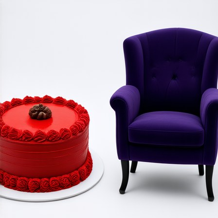
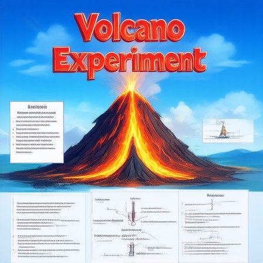
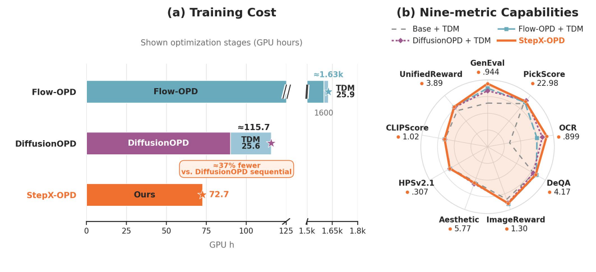
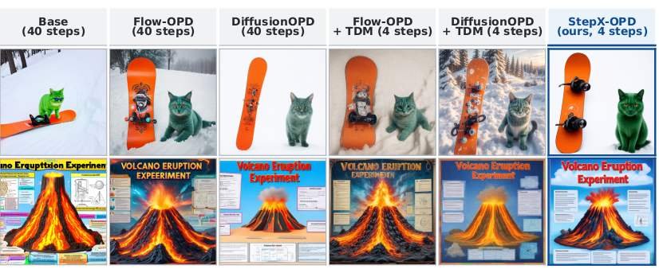
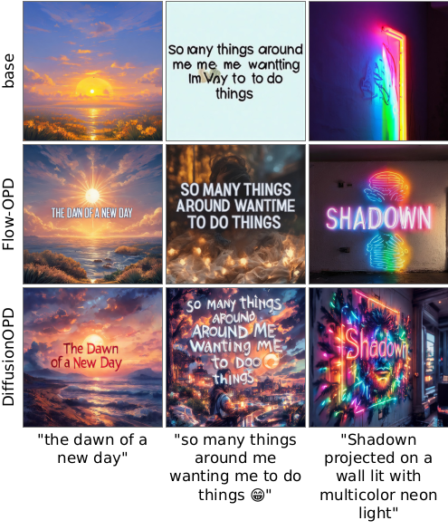
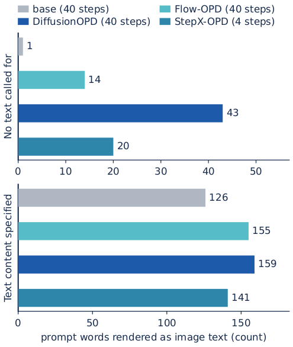

Capability transfer
The source-selected teacher drives distribution matching on states the student actually visits.
Capability integration and trajectory compression, trained together on the student’s own rollout.
1StepFun·2Westlake University
Code will be released with the formal version.
Every model above generates in four sampling steps. Each column keeps the same prompt and the same initial noise seed, so switching models changes only the model.


Overview
Text-to-image diffusion models must combine broad capabilities, such as instruction following, text rendering, perceptual quality, and human preference, with the few-step sampling that deployment requires. On-policy distillation supervises a student on states it generates itself, consolidating capabilities from several specialized teachers into one model, while step distillation compresses a sampling trajectory into a few steps; we study combining the two. However, existing pipelines instead chain them: a full-step multi-teacher model is trained first and compressed only afterward, so compression waits on that stage, and the capabilities it consolidates are not guaranteed to survive compression. To address this, we introduce StepX-OPD, a multi-teacher on-policy distillation method that jointly consolidates specialist capabilities and compresses the sampling trajectory: after a brief self-distillation warmup, each mini-batch is drawn from one training source and routed to the frozen reward-specialized teacher for that source, which drives distribution matching on states supplied by the student's own few-step rollout. Furthermore, on low-noise batches the routed teacher also regresses the student's velocity field directly, balancing capability transfer against the fidelity of the few-step trajectory itself.
Key contributions
Method
After a brief self-distillation warmup, each mini-batch comes from one training source. Its source chooses the matching frozen specialist, and the student supplies the states through its own few-step rollout.
Capability transfer
The source-selected teacher drives distribution matching on states the student actually visits.
Trajectory fidelity
On low-noise batches, the routed teacher also directly regresses the student’s velocity field.
Results
At four steps, StepX-OPD reaches the highest Average, GenEval, and OCR on both bases. DeQA and PickScore are led by other methods, as the detailed tables show.
SD3.5-Medium
0.8906
Average · four steps
FLUX.1-dev
0.8902
Average · four steps
On SD3.5-Medium, the four-step StepX-OPD Average of 0.8906 exceeds the forty-step Flow-OPD Average of 0.8788.
| Method | GenEval | OCR | DeQA | PickScore | Average |
|---|---|---|---|---|---|
| Base + TDM | 0.653 | 0.335 | 4.002 | 21.87 | 0.6573 |
| Flow-OPD + TDM | 0.875 | 0.751 | 4.217 | 22.60 | 0.8345 |
| DiffusionOPD + TDM | 0.838 | 0.833 | 3.952 | 23.41 | 0.8403 |
| StepX-OPD (ours) | 0.946 | 0.897 | 4.178 | 22.97 | 0.8906 |
| Method | GenEval | OCR | DeQA | PickScore | Average |
|---|---|---|---|---|---|
| Base + TDM | 0.632 | 0.557 | 4.340 | 21.94 | 0.7252 |
| Flow-OPD + TDM | 0.864 | 0.901 | 4.087 | 23.30 | 0.8695 |
| DiffusionOPD + TDM | 0.882 | 0.925 | 4.005 | 23.32 | 0.8761 |
| StepX-OPD (ours) | 0.890 | 0.929 | 4.233 | 23.28 | 0.8902 |
Highest value in each column.
| Method | GenEval | OCR | DeQA | PickScore | Average |
|---|---|---|---|---|---|
| Base | 0.666 | 0.529 | 4.045 | 21.79 | 0.7105 |
| GenEval Teacher | 0.946 | 0.597 | 3.965 | 21.66 | 0.7923 |
| OCR Teacher | 0.656 | 0.924 | 3.849 | 21.66 | 0.7957 |
| PickScore Teacher | 0.744 | 0.629 | 4.166 | 23.30 | 0.7756 |
| Flow-OPD | 0.905 | 0.885 | 4.268 | 22.66 | 0.8788 |
| DiffusionOPD | 0.945 | 0.930 | 4.113 | 23.68 | 0.9022 |
| Method | GenEval | OCR | DeQA | PickScore | Average |
|---|---|---|---|---|---|
| Base | 0.655 | 0.588 | 4.298 | 21.96 | 0.7368 |
| GenEval Teacher | 0.900 | 0.663 | 4.333 | 22.06 | 0.8195 |
| OCR Teacher | 0.670 | 0.942 | 4.254 | 21.99 | 0.8270 |
| PickScore Teacher | 0.690 | 0.678 | 4.153 | 23.57 | 0.7765 |
| Flow-OPD | 0.880 | 0.913 | 4.247 | 23.50 | 0.8864 |
| DiffusionOPD | 0.892 | 0.933 | 4.225 | 23.58 | 0.8943 |

Qualitative comparison

Unintended text rendering
The study measures prompt words appearing as image text when prompts neither request nor forbid text. The effect rises with capability integration, including StepX-OPD, and a variant reduces it.


More analysis
Both ablations report SD3.5-Medium at four sampling steps.
Teacher selection
All rows share the initialization, teacher set, rollout, and batch, so only the teacher-selection rule varies. Source routing has the highest GenEval, OCR, PickScore, and Average, while its DeQA is the lowest of the three. The largest separation is on OCR.
| Selection rule | GenEval | OCR | DeQA | PickScore | Average |
|---|---|---|---|---|---|
| Source routing (ours) | 0.9460 | 0.8971 | 4.178 | 22.97 | 0.8906 |
| Random teacher | 0.9241 | 0.7388 | 4.203 | 22.37 | 0.8410 |
| Uniform teacher average | 0.9292 | 0.6738 | 4.179 | 22.18 | 0.8230 |
Velocity regression
The first three settings land within 0.001 of one another on Average, indicating that the reported setting is insensitive to this choice. The step-1000 row comes from a separate run family.
| Regression setting | GenEval | OCR | DeQA | PickScore | Average |
|---|---|---|---|---|---|
| w/o regression | 0.9434 | 0.8956 | 4.178 | 22.95 | 0.8894 |
| from step 0 | 0.9444 | 0.8950 | 4.177 | 22.96 | 0.8895 |
| from step 500 | 0.9442 | 0.8986 | 4.170 | 22.98 | 0.8901 |
| from step 1000 | 0.8869 | 0.8145 | 3.996 | 22.62 | 0.8426 |
| wb-weighted (ours) | 0.9460 | 0.8971 | 4.178 | 22.97 | 0.8906 |
Citation
@inproceedings{placeholder2026stepxopd,
author = {Chenru Wang},
title = {StepX-OPD: Rethinking Multi-Teacher On-Policy Distillation in Diffusion Models},
booktitle = {Venue placeholder}, % venue line is a placeholder
year = {2026}
}